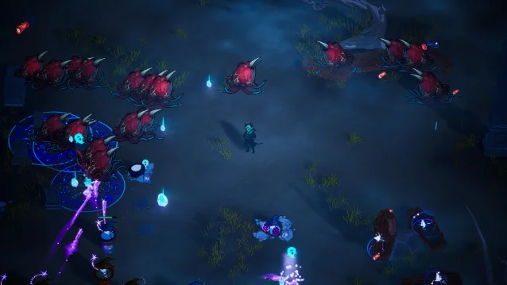
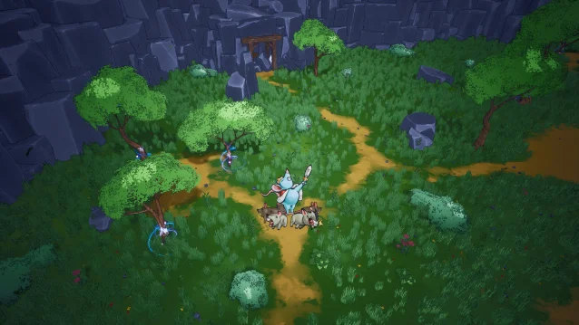
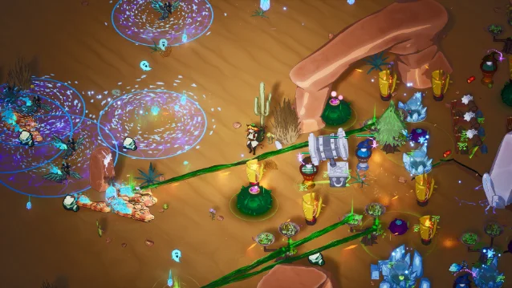

Choose your alchemist from a magical coven. Explore a hand-painted, post-apocalyptic fantasy world. Fend off hordes of magical beasts in this roguelite tower defense and survival game. Play solo or in co-op with up to 3 friends. Strategize and adapt in tower defense × survival × bullet heaven.



System Optimization & Balancing: Developed comprehensive spreadsheet models to balance complex, interacting variables across towers, enemy scaling, meta-upgrades, and in-session power-ups. Streamlined the in-game economy by refining and reducing redundant resource and currency loops.
Scope & Production Strategy: Onboarded mid-production and conducted an immediate design audit to refocus the game on its core production briefs. Redesigned meta-progression and power-ups by smartly reusing existing systemic architecture, significantly reducing development time and eliminating redundant mechanics.
Content & Gameplay Design: Overhauled the core tower roster to eliminate functional overlap. Detailed level layouts, defined distinct biome systems, and expanded enemy and boss variety to ensure diverse tactical challenges.
UX & User Research: Conducted targeted user research to identify friction points, subsequently improving the overall user experience through better in-game feedback, streamlined tooltips, and clearer QA systems.
Operating within a cross-functional team of nine, the production pipeline relied on structured agile methodologies and consistent stakeholder alignment to maintain momentum and clear development hurdles.
Cross-Functional Collaboration: Coordinated development efforts across a medium-sized team of nine, balancing individual gameplay and system design tasks with broader project goals.
Weekly Syncs & Unblocking: Facilitated weekly Monday evening reviews dedicated to showcasing functional progress, tracking sprint deliverables, and actively discussing and resolving technical or design blockers.
Stakeholder Alignment: Conducted bi-weekly deep dives with the Product Owner to review the overarching state of the game, evaluate milestone progress, and provide detailed updates on individual design trajectories.